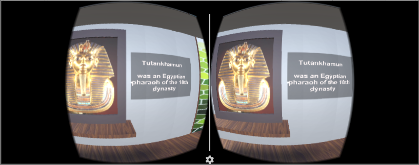

Night At The Museum Project
As part of my VR Nanodegree program at Udacity, I designed, tested and iterated a mobile VR Museum.
Design Process
Statement of Purpose: The Museum is a virtual reality application for mobile where the user moves through waypoints to recognize stations and listen to the audio for it.
User Testing
No matter how well you can plan, you will never know anything until someone tries it out. That was a consistent theme throughout the build process. Marking a goal to implement some piece than getting it in front of someone as soon as possible to test out helps a lot.
Here are some questions I asked their receptive user responses.
Q: how do you feel about UI ?
A: Good home interface and explains how the movement in Museum but the interface in every station needs to contain more information.
Q: How do you feel when moving through waypoints?
A: I think it's a good choice for waypoints for use as a means of movement at the Museum.
Breakdown of final piece
This section walks you through each area of the game with descriptions of the final piece as well as their development progression.
The user starts with a simple user interface that explains how the movement at the Museum and then moves through the waypoints from the station to the other.
Start

station

another station
Conclusion
Night at the Museum is a simple mobile VR application tailored to showcase just how diverse virtual reality can be and is already becoming. It demonstrates the power audio and visual cues.
Next Steps
For future development, Night at the Museum could include even more examples of how VR is changing our world.
Link to additional work
To check out more of my work, visit my GitHub profile